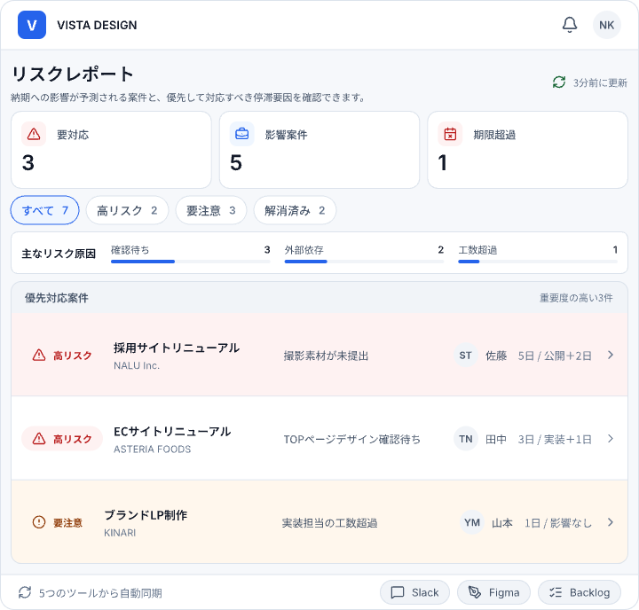
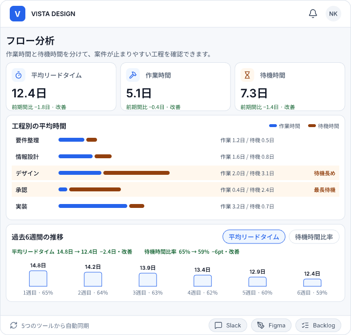

01
確認待ちを横断して一覧化
複数のツールに散らばる確認待ちを、案件をまたいでひとつの画面から確認できます。
FEATURES
VISTAは、制作進行に散らばる確認待ち・停滞リスク・案件の流れをひとつにつなぎ、
今見るべき状況をわかりやすく可視化します。

01 / WAITING INBOX
Slack、Figma、Backlogなどに分散している確認待ちをまとめて表示。誰の確認で止まっているのか、どの案件を優先して動かすべきかをひと目で把握できます。
複数のツールに散らばる確認待ちを、案件をまたいでひとつの画面から確認できます。
担当者と経過時間を確認し、確認依頼がどこで止まっているのかを把握できます。
長時間止まっている案件や対応が必要なものを見つけ、次に動かす案件を判断できます。
02 / RISK REPORT
進行状況や更新の止まり方から、停滞リスクのある案件を整理。問題が大きくなってから気づくのではなく、確認やフォローが必要な案件を早めに見つけられます。
03 / FLOW ANALYTICS
案件がどこで滞りやすいのか、制作フロー全体を俯瞰して確認。個別案件だけでなく、チーム全体の進行傾向を把握し、改善につなげられます。

ONE VIEW
確認待ち、停滞リスク、制作フロー。 別々の場所に散らばっていた情報をVISTAでつなぐことで、 状況確認のための往復を減らし、次のアクションに集中できます。